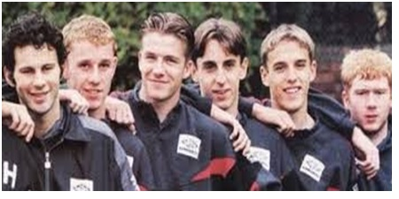
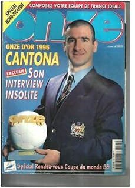

Chương 28

hiều người cho rằng, sau thất bại trắng tay, Alex Ferguson nổi giận, rao bán các trụ cột Paul Ince, Mark Hughes và Andrei Kanchelskis. Điều này thiếu chính xác. Hughes đã lớn tuổi, không muốn phải ngồi dự bị cho Cantona và Cole, nên từ chối ký hợp đồng mới với United. CLB chẳng còn cách nào khác, buộc phải để anh sang Chelsea. Trường hợp Kanchelskis phức tạp hơn. Trong bản gia hạn hợp đồng ký năm 1994, không biết làm thế nào, luật sư phía Kanchelskis gài được vào một điều khoản: Nếu trong tương lai, United bán Kanchelskis cho CLB khác, cầu thủ người Nga sẽ nhận một phần ba tiền chuyển nhượng. Ta nên biết: Thông thường trong các vụ mua bán, cầu thủ được chia 10% đã là nhiều, nói chi đến một phần ba. Vậy nên mới ký hợp đồng chưa đầy một năm, Kanchelskis đã nằng nặc đòi đi. Đại diện của anh còn đe dọa BLĐ United theo kiểu mafia, khiến họ khiếp vía, chịu mất Kanchelskis cho Everton.
Riêng Paul Ince thì quả đúng Ferguson tống khứ. Sau năm năm thành công ở Old Trafford, Ince bắt đầu khệnh khạng, thường xuyên làm trái chỉ đạo của HLV: Nhất quyết đòi chơi tiền vệ tấn công, không chịu phòng ngự. Đương nhiên, Ferguson không bao giờ dung thứ “quyền thần”. Ông bán liền anh cho Inter Milan.
Ince là gương mặt rất được yêu mến tại United; CĐV Quỷ Đỏ không biết nội tình câu chuyện, nên ai cũng chê trách Ferguson vô cớ đuổi ngôi sao. Họ lại càng hoang mang khi thấy Fergie bán ba trụ cột, thu gần 14 triệu bảng, song chẳng mua thêm cầu thủ lớn nào để bổ sung lực lượng. Nhiều người cho rằng Ferguson đã lẩm cẩm. Theo kết quả thăm dò ý kiến của tờ Manchester Evening News, có đến 53% độc giả muốn ông từ chức.
Ferguson không mua sắm là có lý do. Ông tin tưởng lứa U-18 giành Cúp FA trẻ năm 1992 nay đã đủ lông đủ cánh, có thể thay thế lớp đàn anh, cạnh tranh trên đấu trường Ngoại Hạng. Mùa 1994-1995, ông đã cho một số cầu thủ trẻ thử sức tại Cúp C1. Tuy United bị loại từ vòng đấu bảng, các cầu thủ này thi đấu khá tự tin, để lại ấn tượng đẹp. Không lý do gì lại không thể tiếp tục đặt niềm tin vào họ.
Thời thế đổi thay, thế hệ 1992 rất khác so với “đồng ấu Busby”. Trong khi các bậc tiền bối lãnh lương ba cọc ba đồng, sống trong nhà trọ, mỗi ngày đến sân bằng xe buýt; những chàng trẻ của Ferguson chưa đến 20 đã sắm được nhà riêng, chạy xế hộp đắt tiền, cáu cạnh. Tuy thế, về khía cạnh chuyên cần, đạo đức thì hai lứa như nhau. Dưới sự kiểm soát nghiêm ngặt của Fergie, cầu thủ trẻ mỗi tuần chỉ được đi chơi tối một lần, không bao giờ được về quá khuya, và tuyệt đối cấm đụng đến rượu. Tất cả đều được huấn luyện về quản lý tài chánh và kỹ năng ứng xử với truyền thông. Các ông thầy Ferguson, Kidd và Harrison một mặt động viên, khích lệ, mặt khác luôn nhấn mạnh với học trò họ vẫn chưa là gì cả, muốn nên công danh sự nghiệp thì phải nỗ lực không ngừng.
Hè 1995, cũng như fan hâm mộ, các cầu thủ trẻ United trông đợi Ferguson bổ sung lực lượng. Đến lúc trận đấu mở màn gặp Aston Villa sắp diễn ra, vẫn không thấy ai được mua về, họ mới dám tin HLV đã đặt trọn hy vọng vào mình. “Thầy Fergie tin tưởng chúng tôi, ngay khi chúng tôi chưa dám tin vào bản thân”, David Beckham viết trong hồi ký. Ra quân ở Villa Park, Quỷ Đỏ trình làng bốn cầu thủ tuổi đôi mươi trong đội hình chính thức: Paul Scholes, Nicky Butt, cùng anh em nhà Neville: Gary và Phil. Hai cầu thủ triển vọng nữa, Beckham và John O’Kane, ra sân từ ghế dự bị. Bên cạnh những cái tên trên, cũng phải ghi nhận nhiều trụ cột khác của United tuổi vẫn còn rất trẻ: Keane và Sharpe 24, Andy Cole 23, Giggs 22. Nhìn vào danh sách CLB thành Man, bình luận viên Alan Hansen nhận định: Ferguson cần mua thêm cầu thủ, chứ toàn nhóc con mà thắng nỗi gì!
Câu nói của Hansen đúng trong ngày hôm đó, bởi tuy Beckham ghi được một bàn, United thất thủ 1-3. Nhưng Hansen đúng một ngày mà sai vạn đại. Sau cú xẩy chân, lũ “nhóc con” đá như…nước chảy mây trôi, giúp đội toàn thắng năm trận kế tiếp. Anh em Neville thể hiện phong độ tốt dưới hàng thủ, trong khi Giggs, Beckham, Scholes và Butt liên tục phá lưới đối phương. Tuy vậy, phong độ của đối thủ cạnh tranh trực tiếp Newcastle còn tốt hơn. Do cựu danh thủ Kevin Keegan dẫn dắt, “Chim Ác Là” sở hữu một đội hình rất có chiều sâu, với những David Ginola, Pavel Srnicek, Philippe Albert, Les Ferdinand, Peter Beardsley và Keith Gillespie. Họ liên tục dẫn đầu từ tuần này qua tuần khác.

Thế hệ vàng Alex Ferguson (từ trái sang): Ryan Giggs, Nicky Butt, David Beckham, Gary Neville, Phil Neville, Paul Scholes (Ảnh: Iamanutd.tumblr.com)
Dẫu tin cầu thủ trẻ, Alex Ferguson nhận thức rõ họ dù sao vẫn non kinh nghiệm, nếu không được đàn anh dìu dắt, chưa chắc đã duy trì nổi phong độ suốt mùa giải. Do vậy, dù bận việc tới mấy, ông vẫn theo dõi sát sao những động thái từ Cantona, để đảm bảo anh không buồn chán, đòi rời Old Trafford. Fergie lo lắng không thừa. 248 ngày treo giò là quá dài. Trong quãng thời gian đằng đẵng đó, Cantona mấy lần ngã lòng, muốn giải nghệ, buông bỏ tất cả. Có lần, anh đã đáp máy bay về Paris, buộc Ferguson tức tốc bay theo, trổ hết tài thuyết khách mới kéo được quân át chủ bài về lại xứ sương mù.
Ngày 1 tháng 10, 1995, Cantona trở lại sau án cấm, lập tức ghi một bàn và kiến tạo bàn còn lại cho Nicky Butt, giúp Quỷ Đỏ hòa 2-2 trước Liverpool. Có Cantona, các cầu thủ trẻ thi đấu càng tự tin, United như hổ chắp thêm cánh. Từ chỗ bị Newcastle dẫn trước 12 điểm, gần như không còn hy vọng vô địch, CLB dần dần thu ngắn cách biệt. Trận cầu đinh mùa giải diễn ra vào đầu tháng ba,1996. Trên sân St James’s Park, Newcastle ép United đến độ tả tơi, nhưng Schmeichel, trong một ngày xuất thần, liên tiếp thực hiện những pha cản phá siêu đẳng, nhất quyết không cho đối phương phá lưới, để rồi Cantona ghi bàn duy nhất, đem về ba điểm cho đội khách. Thua trận chung kết sớm, Newcastle xuống tinh thần, tiếp tục xẩy chân, trong khi United cứ thế chiến thắng. Sau trận thắng trước Arsenal vào ngày 20 tháng 3, đội vượt lên đầu bảng.
Từ đó trở đi, đội đỏ chỉ thua thêm một lần, trước Southampton. Giữa trận đấu này, diễn ra một sự kiện hy hữu. Ra quân với màu áo xám, United bị gác 3-0 trong hiệp một. Qua hiệp hai, Ferguson ra lệnh cho cầu thủ đồng loạt thay đồ, chuyển sang mặc áo xanh-trắng. Đội đá khá hơn một chút, không thua thêm bàn nào, Ryan Giggs gỡ được một trái danh dự! Giải thích nguyên nhân thay áo, Fergie cho biết màu xám khiến cầu thủ…không nhìn ra nhau trên sân. Giới hâm mộ thì đơn giản cho rằng xám là màu xui. Trong năm trận mặc áo xám, United chẳng thắng trận nào, và sau trận gặp Southampton, chưa bao giờ đội mặc lại màu đấy.
Thua Southampton không gây hậu quả tai hại; United vẫn hoàn tất cú ngược dòng ngoạn mục vào bậc nhất trong lịch sử giải VĐQG Anh. Newcastle ngự trị trên đỉnh từ đầu đến tháng ba, có lúc tạo khoảng cách 12 điểm với đội đứng nhì, thế mà cuối cùng cay đắng nhận thất bại. Còn với nhà tân vô địch, niềm vui nhanh chóng nhân đôi. Ăn xong tiệc mừng danh hiệu Ngoại Hạng, United đánh bại tiếp Liverpool để đoạt Cúp FA. Bàn thắng duy nhất của trận chung kết đến vào phút 85: Từ đường phạt góc của Beckham, Cantona quăng chân bắt cú demi-volley chuẩn xác đến từng ly, không cho thủ môn đối phương cơ hội nào.
Vậy là, tuy mới ở Old Trafford 10 năm, Alex Ferguson đã cân bằng chiến quả đoạt tám danh hiệu lớn của Sir Matt Busby, lại hơn ở chỗ dẫn dắt đội giành hai cú đúp, thành tích chưa từng có tiền lệ. Ông làm nên kỳ tích, một phần không nhỏ nhờ vào Cantona. Chỉ ra sân từ tháng 10, 1995, Cantona kịp ghi 19 bàn tại các giải, trong đó có đến 15 bàn mang tính quyết định số phận trận đấu. Đặc biệt trong khoảng ngày 4 tháng 3 đến 8 tháng 4, 1996, United gần như biến thành đội bóng một người, như bảng số liệu dưới đây cho thấy:
Ngày Tháng | Trận Đấu Thuộc Giải Ngoại Hạng | Cầu Thủ Ghi Bàn |
4/3/1996 | United 1 – Newcastle 0 | Cantona |
16/3/1996 | United 1 – QPR 1 | Cantona |
20/3/1996 | United 1 – Arsenal 0 | Cantona |
24/3/1996 | United 1 – Tottenham 0 | Cantona |
6/4/1996 | United 3 – City 2 | Cantona, Cole, Giggs |
8/4/1996 | United 1 – Coventry 0 | Cantona |
“Một tay lấp kín bầu trời” như thế, Cantona chinh phục ngay cả những chuyên gia khó tính nhẩt. Anh được FWA trao phần thưởng Cầu Thủ Xuất Sắc Nhất Nước Anh[1], và tạp chí uy tín Onze Mondial tôn vinh là Cầu Thủ Xuất Sắc Nhất Châu Âu[2]. Bên cạnh Cantona, các cầu thủ trẻ mới ra ràng cũng thể hiện phong độ không thể chê. Paul Scholes ghi 14 bàn, đứng thứ hai trong danh sách phá lưới, Giggs 12, Beckham 8. Nicky Butt và Gary Neville mỗi người đều đá trên 30 trận, duy có Phil Neville hơi chịu lép, do bị Denis Irwin phủ bóng.

Eric Cantona nhận giải Onze Vàng giành cho Cầu Thủ Xuất Sắc Nhất Châu Âu 1996 (Ảnh: Ebay.ca)
Chú thích:
[1]Dù thường xuyên giành giải của PFA, đây là danh hiệu FWA đầu tiên của United kể từ George Best năm 1968.
[2] Giải Onze Vàng giành cho Cầu Thủ Xuất Sắc Nhất Châu Âu do tạp chí Onze Mondial (Pháp) trao tặng, bắt đầu từ năm 1976.